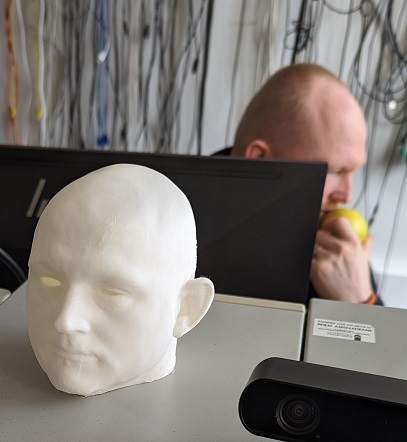

To further justify the means of our design approach other areas were explored and evaluated for their use and purpose in terms of potential utility for the design.
Figure 22 Screenshot of Recording of Swordfight between two Actors (Recording provided by Staffordshire University, Screenshot taken by Mark Warren)
Mocap (short for Motion Capture) is used to manipulate computer generated objects that can be used for visual effects such as making a solid object move visually. This records the movement of people or objects creating a photorealistic effect that can be mapped to models in order to recreate scenes. This is usually used for Film, TV, Video Games, Health, Sport and Military (Adobe, 2023).
Motion capture is achieved either via motion capture suits or X-base markers in which the spheres can be tracked by cameras (Nymoen, K., No Date). The advantages is that this produced low latency animations, doesn’t require too much training, provides realistic movements and a large amount of data can be produced. The disadvantages however, are the software and hardware need to be specific, it can be costly, limited by field of view of the camera, retakes may be needed if a motion capture was not done right or had problems which would take time(Adobe, 2023).

Figure 23 Manipulation Result from Recording of Swordfight between two Actors with use of Shogun Live Software (Recording provided by Staffordshire University, Screenshot taken by Mark Warren)
An industrial example of Motion Capture would be predicting 3D keypoints of body parts to capture full-body human performance (Li, K., Mao, Y. Liu, Y. Shao, R., 2020).
The possibility is there to demonstrate the movement of the head but has no practical purpose of the overall design.
Figure 24 Laser Cutting (photograph taken by Mark Warren)
Trotec Speedy 400 Run on Ruby has a working area of 1016 (width) x 610 (diameter) mm this allows for engraving and cutting of various material (Acrylics, Glass, Plastic Sheets, etc) (Trotec Laser GmbH, 2023).
Laser cutting is achieved through the use of Adobe Illustrator Software. A material is required to use as base so that the laser can be used on the material to burn lines into the material to create cut shapes or burn patterns onto the material. The software relies on basic black and white writing/drawings which can then later be turned into a result. The advantage is burned images can be created and desired shapes can be cut out. However, this is limited by the person’s ability to design, the material used can affect the desired outcome and the canvas cannot exceed the space the laser cutter has allocated – which means the material used has to be of a restrained size. Laser Cutting was not made use of as there was no practical use for the artifact.
An application of this technology would be cutting a cardiovascular stent out of a 316L stainless steel tube (Sharma, A., Yadava, V., 2018)
The design needed to be further evaluated via a 3D Printer to ensure this was the best approach for the design. A smaller version of the head was printed out to understand how we wanted to proceed in scale for the design.

Later it was decided that because of hinges wanted on the back of the head this would need to be rescaled so that the proportions would be more manageable as the head was too small to work with.

Figure 25 Using the Haptic Modelling Arm (Photograph taken by Mark Warren)
The Touch X Modelling Arm applies haptic feedback to simulate a 3d environment of an object – this allows the device to offer movement in 6 dimension of positional sensing and 3 dimensions of freedom force feedback. A space of around 355mm(width) x 228mm(height) x 180mm(diameter) can be worked with, a force of around 1.75 Newtons can be applied to the pen to achieve results. The pen uses force feedback to establish to the user that there is a physical object being drawn upon.

Figure 26 Smoothing Poro's tongue (photo taken by Mark Warren)
Various tools can be used to carve, create mesh objects and modify shapes created using the pen and Geomagic Freeform software.
Figure 27 Painting Poro mesh tongue (photo taken by Mark Warren)

Figure 28 Finished Poro Modelling version 1 (photograph taken by Mark Warren)
The pen had limited use for the model – use of the pen was rejected since this would have costed time and money to adapt to scale: similar issue with the 3D printed head. If given time and money, use of the pen could be considered as this would have offered a means to create tone for skin but because of personal preference and tool available in Blender software that was more portable and more suitable to use, because the pen would only be available at Staffordshire University itself (behind a locked door that required staff permission to access) this made use of this tool impractical.
An industry example of the pen would be use for surgical interns to perform accurate surgery using the pen to simulate a medical procedure (Wade, A., 2018).
The poro itself came out great and minatures of the original were handed out - the Staffordshire University staff were so impressed of the quality of the Poro that they decided to showcase the design as examples of what the pen is capable of.
Figure 29 Display of 3D pen minatures displayed at Staffordshire University (photograph taken by Mark Warren)
Figure 30 STL File of Finished Poro (provided by Mark Warren)
| Item | Price |
|---|---|
| Poro in Colour (30x30mm) | £25.00 |

Figure 31 Final version of Poro 3D Model (Screenshot taken by Mark Warren)
This was a colour print of a quite small 3D print: if the head was done in colour this would have costed too much money.
The University's budget allocated is £50.00 per group, budget constraints prevented colour printout in 3D.
The Production of the Head and Hinges were then moved onto. Please refer to the Production Section.